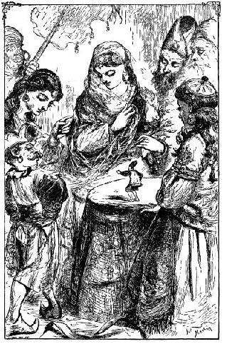
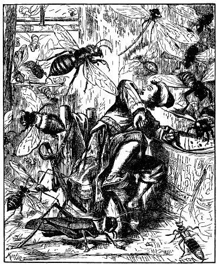
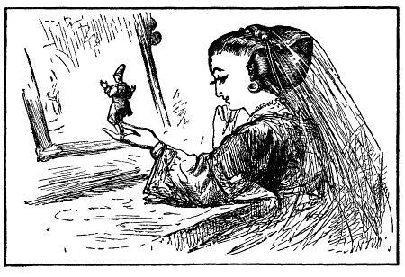

Nhà vua vốn sáng suốt hơn nên cho các bác học về và cho gọi bác chủ trại đến. Thật là may bác ta còn ở thủ đô chưa về. Sau khi hỏi chuyện riêng bác ta, vua cho tôi gặp hai cha con bác, thế là ba mặt một lời, ngài bắt đầu tin những lời tôi nói là thật. Ngài báo hoàng hậu cho người trông nom chăm sóc tôi cẩn thận và bằng lòng để cho cô Glumdalclitch tiếp tục bảo ban tôi, bởi vì ngài thấy hai chúng tôi thân thiết nhau như thế nào. Người ta dành cho cô một căn phòng trong cung đình, cô được một bà bảo mẫu dạy dỗ, lại có một người hầu phòng và hai người ở gái. Cô được giao nhiệm vụ chăm sóc tôi. Hoàng hậu ra lệnh cho bác thợ đóng đồ gỗ quý làm một cái hộp dùng làm phòng cho tôi ở theo kiểu mẫu mà Glumdalclitch và tôi ưa thích. Bác thợ là một nghệ nhân rất khéo tay, theo lời tôi chỉ dẫn, chỉ trong ba tuần lễ, bác làm xong một cái phòng bằng gỗ, mỗi cạnh mười sáu foot, cao mười hai foot, cửa số có khe để đẩy cánh cửa ra vào, một cửa lớn và hai căn phòng nhỏ bên trong, như kiểu nhà ở Luân Đôn. Tấm ván làm trần có hai bản lề có thể mở lên để đưa giường vào phòng. Một bác thợ làm thảm trong triều đình cung cấp cho tôi cái giường và chính tay cô Glumdalclitch hằng ngày mang giường ra ngoài, xếp dọn khăn, nệm, và mỗi tối lại kê giường vào, rồi đóng nắp trần xuống, cài then cẩn thận khi tôi lên thường đi ngủ. Một người thợ thủ công nổi tiếng về những công trình chạm trổ bé tí xíu, làm cho tôi hai cái ghế bằng chất gì giống như ngà, hai cái bàn và một cái tủ để tôi xếp đồ dùng. Khắp các mặt phòng được lót nệm, cả sàn nhà và trần nhà nữa, để tránh mọi tai nạn khi người ta chuyển tôi từ nơi này qua nơi khác, và để đỡ xóc khi tôi đi xe ngựa. Tôi muốn một cái khóa cửa để chuột không vào được nên một bác thợ khóa, sau nhiều lần thử đã hoàn thành một cái ổ khóa bé tí xíu chưa từng thấy ở nước này. Tôi được giao giữ chìa khóa trong túi vì sợ cô Glumdalclitch cầm lọt tay đánh rơi mất. Hoàng hậu đặt dệt những tấm lụa mỏng nhất để may quần áo cho tôi, nó không, dày hơn khăn trải giường ở nước Anh mấy tí, nhưng rất vướng, phải một thời gian tôi mới quen. Quần áo may theo mẫu của dân tộc này, kiểu nửa Ba Tư nửa Trung Quốc, vừa long trọng, vừa lịch sự.
Hoàng hậu rất thích ở gần tôi, ăn cơm cũng phải có tôi ở bên cạnh. Bữa ăn của tôi đặt trên bàn của hoàng hậu, ngang tầm khuỷu tay bà, lại kê một cái ghế cho tôi ngồi. Cô bé Glumdalclitch ngồi ở một cái ghế đẩu liền sát đầu bàn tôi, để giúp đỡ và trông nom cho tiện. Tôi có một bộ đồ ăn hoàn chỉnh. gồm đĩa to, đĩa nhỏ như thứ đồ chơi của trẻ con tôi thấy bán ở cửa hàng thiếu nhi ở Luân Đôn. Cô bé vú nuôi của tôi cất bộ đồ ăn trong một cái hộp, hộp để trong túi áo, đến bữa ăn mới dọn ra và chính tay cô rửa bát cho tôi. Không ai ăn cơm cùng với hoàng hậu, trừ hai công chúa, cô lớn mười sáu tuổi, cô bé mười ba tuổi một tháng. Hoàng hậu thường đặt vào đĩa ăn của tôi một miếng thịt, tôi mang dao ra và tự cắt lấy. Bà tỏ ra rất thích thú khi xem tôi cắt nhỏ miếng thịt ra. Tuy dạ dày bà thuộc loại yếu, nhưng một miếng thịt bà ăn cũng đủ cho một bữa cơm của mười hai bác chủ ấp ở bên Anh, lúc đầu thấy thế, tôi phát kinh lên. Bà nhai cánh chim sơn ca cả xương, mặc dù mỗi cánh chim to gấp chín lần cánh chim gà tây, và bỏ vào miệng một miếng bánh to bằng hai cái bánh nặng bốn pound[2]. Bà uống rượu rót trong một cái cốc bằng vàng, mỗi hớp bằng cả một thùng ton- nô. Dao thì dài bằng hai cái lưỡi liềm cắm thẳng vào cán. Thìa, dĩa và các đồ dùng khác đều to, với tỉ lệ như thế. Tôi còn nhớ một hôm cô bé Glumdalclitch dắt tôi đi xem mấy cái bàn, bên trên mười hay mười hai con dao và dĩa to tướng xếp thành hàng, chưa bao giờ tôi thấy một cảnh tượng rùng rợn như thế.
Thứ tư mỗi tuần (như tôi đã nói, thứ tư là ngày nghỉ của họ), vua, hoàng hậu và con trai, con gái hoàng tộc cùng ăn chung trong cung điện. Tôi trở thành một cận thần của nhà vua nên bàn và ghế của tôi kê bên trái ngài, trước một bình muối. Đức vua rất thích nói chuyện với tôi, ngài hỏi tôi về phong tục, tôn giáo, luật pháp, chính quyền và trình độ khoa học ở châu Âu, tôi đem hết sự hiểu biết của mình để trả lời ngài. Với trí thông minh linh hoạt, sự phán đoán chính xác, ngài phát biểu những ý kiến rất khôn ngoan, những nhận xét hợp tình hợp lý về tất cả những điều tôi trình bày. Nhưng phải kể thật với các bạn một câu chuyện: một hôm tôi nói hơi quá nhiều về Tổ quốc thân yêu của tôi, về thương mại, những trận chiến tranh trên đất và dưới biển. những ý kiến của tôi về tôn giáo, những đảng phái chính trị. Nhưng do những thành kiến của nhà vua và sự giáo dục của ngài dẫn ngài đi quá xa, nên ngài cầm lấy tôi, nhấc tôi bỏ vào bàn tay phải, còn tay trái thì vuốt ve âu yếm, ngài khà khà cười vui vẻ, hỏi xem tôi thuộc đảng Tự do hay đảng Bảo thủ ở Anh. Rồi, quay lại vị tể tướng cầm trong tay một cái gậy trắng to bằng cột buồm lớn tàu Royal Sovereign, ngài bảo rằng, sự vĩ đại của con người thật như cái rơm, cái rác, bởi vì ngay con sâu con bọ bé nhỏ như tôi cũng có thể bắt chước được họ. Thế nhưng - ngài nói tiếp - tôi tin rằng những con vật này cũng có tước vị, huy chương đàng hoàng, chúng nó làm tổ, xây dựng thị trấn mà chúng nó gọi là nhà cửa, thành phố, chúng nó có nghi lễ và những đoàn tùy tùng, chúng nó yêu, đấu tranh, đánh nhau, lừa gạt, phản bội. Và cứ thế, ngài nói mãi, và sắc mặt tôi ngày càng biến đổi khi thấy Tổ quốc cao quý của tôi, chúa tể của nghệ thuật và vũ trụ, là nỗi sợ hãi của nước Pháp, là người cầm vận mệnh của châu Âu, là trung tâm của đức hạnh, danh dự và chân lý, niềm tự hào và sự khao khát của vũ trụ, bị nhục mạ như vậy. Nhưng hoàn cảnh của tôi không cho phép tôi rửa nhục. Sau khi suy nghĩ chín chắn, tôi tự hỏi xem có phải thật sự mình bị lăng nhục không. Tôi nhớ lại rằng, sau nhiều tháng sống chung với những người khổng lồ, chuyện trò với họ, nhận thấy mỗi vật quanh tôi đều tương ứng với mọi thứ khác, nên cảm tưởng khủng khiếp lúc đầu trước thân hình to lớn và dáng vẻ của họ dần dần biến mất. Bây giờ, nếu tôi thấy các vị quý tộc và các bà phu nhân ấy tụ tập nhau lại, với đồ trang sức đầy người, quần áo xênh xang, hành động đúng theo cương vị chức tước của mỗi người, đi đi lại lại, chào hỏi, chuyện trò với nhau, thì, nói thật tôi cũng muốn cười nhạo họ, cũng như nhà vua và các quan cười nhạo tôi. Một lần, tôi không thể không mỉm cười khi hoàng hậu đặt tôi trong lòng bàn tay đứng trước tấm gương, gương mặt hai người tạo nên một cái gì tương phản hết sức buồn cười, lúc ấy tôi tưởng tượng rằng chính bản thân tôi bị thu nhỏ đi rất nhiều.

Không gì làm tôi điên ruột và nhục nhã bằng gã lùn của hoàng hậu. Thân hình nó nhỏ chưa từng thấy ở nước này (chắc chưa đầy ba mươi foot), nên thấy một kẻ bé nhỏ hơn nó, nó vô cùng tức tối. Trong khi tôi đứng trên bàn, bận nói chuyện với một ông quan hay một bà phu nhân nào đó, nó đi đi lại lại bên cạnh tôi, trong phòng, bên ngoài phòng hoàng hậu, huênh hoang, làm ra vẻ một người quan trọng. Nó luôn chế giễu thân hình bé xíu của tôi, tôi chỉ biết trả thù bằng cách gọi nó là "cậu cả" hoặc thách nó đánh nhau và trả đũa bằng những lời cãi vã quen thuộc của bọn gia nhân. Một hôm, giữa bữa ăn, thằng nhãi nhép tai ác ấy tức mình vì một câu tôi nói với nó, nó leo lên lưng ghế hoàng hậu tóm lấy ngang lưng tôi trong lúc tôi ngồi ngoan ngoãn trên ghế, nó vứt tôi vào cái bát bằng bạc đầy kem, rồi chạy biến mất. Nếu tôi không phải là tay bơi giỏi, có lẽ tôi đã chết đuối trong bát kem rồi, bởi vì cô bé Glumdalclitch ở tận tít đầu bàn bên kia, còn hoàng hậu thì hoảng hốt nên chẳng biết nên làm gì. Cô bé chạy vội lại vớt tôi lên sau khi tôi uống hai ngụm kem. Người ta mang tôi đến giường nằm, tuy nhiên tôi không việc gì, chỉ hỏng bộ quần áo do ngấm sữa. Gã lùn bị một trận đòn phạt và phải uống hết bát kem nó vừa ném tôi vào. Mọi người chẳng ưa gì nó nữa và hoàng hậu tặng nó cho một bà quan lớn. Thành thử từ đó tôi không bao giờ còn trông thấy nó, tôi rất khoái, bởi vì tôi không thể nói trước được rằng thằng ôn vật quái ác ấy sẽ báo thù tôi bằng cách nào. Trước vụ này nó đã chơi tôi một vố khá đau, làm cho hoàng hậu phải bật cười, tuy trong thâm tâm bà rất không vui, nếu tôi không có lòng độ lượng khuyên can thì bà đã tống nó đi ngay tức khắc rồi. Hoàng hậu bữa ấy ăn món tủy còn ở trong ống xương, sau khi hút tủy, bà để dựng đúng ống xương trên đĩa ăn như thường lệ, gà lùn thừa dịp cô bé Glumdalclitch đi ra ngoài, liền trèo lên ghế đẩu của cô bé, hai tay tóm lấy tôi bóp chặt hai ống chân lại nhét tôi vào lỗ ống xương đến tận ngang bụng. Tôi đờ người ra, mặt buồn thiu. Có lẽ đến một phút mọi người mới trông thấy tôi ở tình trạng ấy, bởi vì tôi cho rằng kêu cứu là hèn quá. Cũng may gia đình nhà vua ít khi ăn nóng, nên chân tôi không bị bỏng chỉ đôi bít tất và cái quần là bị hỏng. Nhờ tôi xin hoàng hậu nên thằng lùn chỉ bị đánh đòn trừng phạt.

Thấy tôi hay khiếp sợ, hoàng hậu thường chế giễu tôi và hỏi những người nước tôi có nhát thế không. Số là tại đàn ruồi, vào mùa hè, ruồi ở đây nhiều vô kể, mỗi con to bằng con chim sơn ca, đến bữa ăn, không bao giờ chúng để tôi yên, chúng o o, vè vè bên tai tôi. Thỉnh thoảng chúng đậu lên thức ăn của tôi, ỉa một bãi hoặc đẻ trứng, tôi trông rất rõ, nhưng những người khổng lồ không trông thấy được như tôi. Có khi ruồi đậu lên mũi tôi hoặc lên trán, đốt tôi rất đau, nó tiết ra một mùi hôi thối khó chịu. Tôi thấy rất rõ một chất sền sệt, mà theo các nhà sinh vật ở nước chúng ta, khiến cho loài muỗi có thể bò đi trên trần nhà. Tôi phải vất vả lắm mới chống lại được những con vật ghê gớm ấy, khi chúng đến sát gần, tôi giật mình đến thót một cái, còn thằng lùn hay bắt một vài con, cầm trong tay như trẻ con nước chúng ta, rồi bất thình lình thả ngay dưới mũi tôi làm cho tôi hết vía và để làm trò cho hoàng hậu. Tôi có mỗi cách để chống lại chúng là lấy dao chém chúng ra từng mảnh khi chúng đang bay, thấy tôi làm việc này khá lanh lẹn, mọi người phục lăn tài khéo léo của tôi.
Tôi còn nhớ một buổi sáng, Glumdalclitch đặt cái hộp đựng tôi trên cửa sổ. Mỗi khi trời đẹp, cô bé vẫn làm thế để cho tôi thở không khí trong sạch (bởi vì tôi không thích cô treo cái hộp của tôi vào một cái đinh gần cửa sổ, như chúng ta theo cái lồng chim họa mi). Tôi mở cửa sổ phòng, vừa ngồi xuống bàn lấy cái bánh ngọt ra ăn bữa lót dạ thì hơn hai chục con ong vò vẽ thấy mùi bánh bay ùa vào phòng, tiếng vo vo to hơn tiếng hai mươi cái kèn tây. Mấy con xông đến cướp bánh, ngoạm từng miếng bay đi, những con khác bay quanh đầu, quanh mặt tôi, làm tai tôi ù lên, và nghĩ đến vòi ong, tôi khiếp quá, lạnh toát cả người. Song tôi còn đủ can đảm để đúng dậy rút kiếm ra, xông lên chém lia lịa, hạ được bốn con, những con khác sợ quá bay mất, lập tức tôi đóng cửa sổ lại. Những con ong vò vẽ to bằng con chim trĩ ở ta, tôi cắt lấy một số ngòi của nó, mỗi cái dài tới một inch rưỡi và sắc như kim, tôi cất kỹ chúng cùng một số những vật lạ khác để sau này mang về châu Âu cho mọi người xem. Trở về Anh, tôi tặng trường đại học

[1] Aristoteles (384 – 322 TCN) là một nhà triết học Hy Lạp cổ đại. Ông được xem là người tạo ra môn luận lí học. Ông cũng thiết lập một phương cách tiếp cận với triết học bắt đầu bằng quan sát và trải nghiệm trước khi đi tới tư duy trừu tượng.
[2] 1 pound bằng 453,59237 gram.